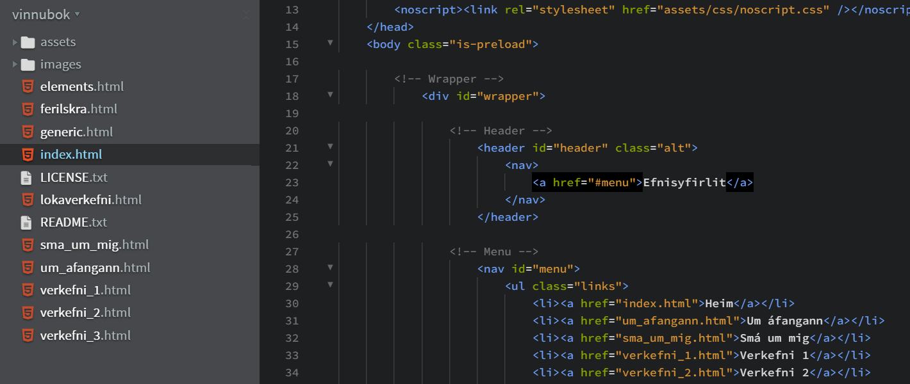
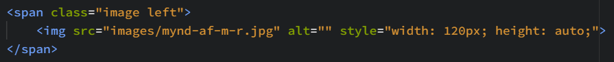
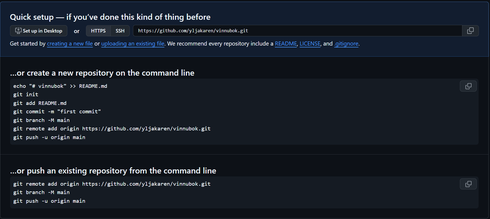
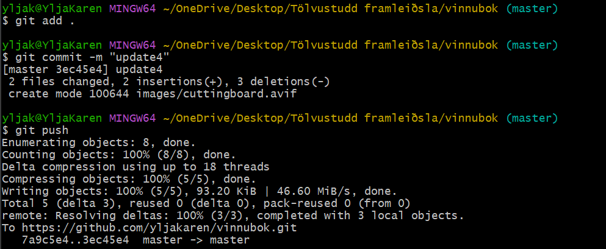
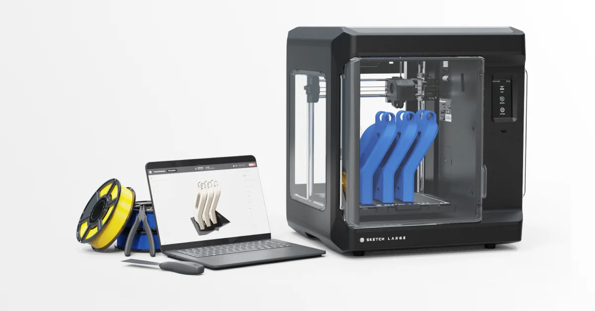
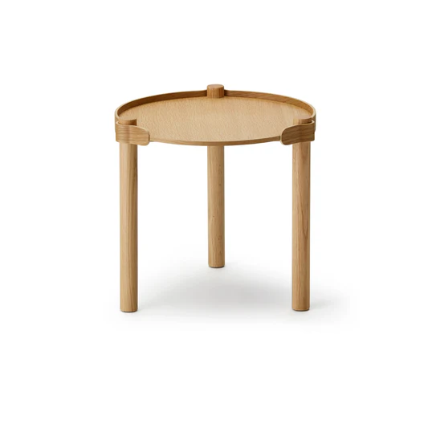
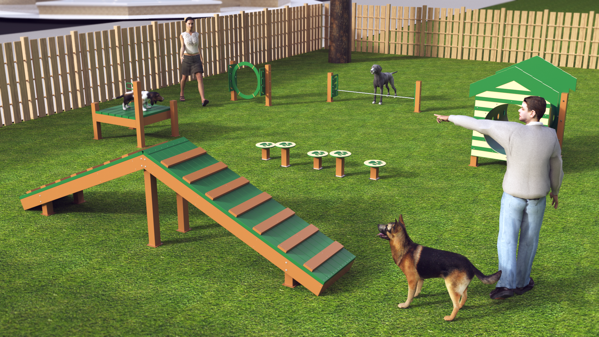

Verkefni 1
Vefsíðugerð

Undirbúningur
Ég byrjaði á því að lesa yfir verkefnislýsinguna á Canvas til að átta mig á því hvað ég þyrfti að gera. Þegar ég var búin að fara yfir allt var ég samt enn ekki alveg viss hvernig best væri að byrja, svo ég horfði á kennslumyndböndin til að komast betur af stað.
Eftir að hafa horft á þau fór ég inn á vefsíðuna HTML5 UP og valdi mér vefsíðusniðmát. Fyrir valinu varð sniðmátið Forty, aðallega vegna þess að mér fannst það litríkast og flottast á síðunni. Ég hlóð síðan niður Brackets og þegar að það vat komið upp gat ég loksins hafist handa við forritunarhlutann og uppsetningu vefsíðarinnar.
Forritun og uppsetning
Þegar ég var búin að setja upp vinnuumhverfið og opna sniðmátið í Brackets byrjaði ég á að kynna mér uppbyggingu verkefnisins, sérstaklega hvernig HTML-skrárnar tengdust saman og hvernig efni var raðað á síðurnar. Í fyrstu var ég smá óviss um hvernig best væri að byrja og hvernig ég ætti að vinna með HTML en ég náði fljótt tökum á grunnatriðunum.
Næsta skref var að einfalda sniðmátið með því að fjarlægja óþarfa takka, valmyndir og texta sem átti ekki við um mína vefsíðu. Ég lagði áherslu á að halda síðunum hreinum og skýrum áður en ég bætti við eigin efni, þannig að gestir á síðunni ættu auðvelt með að finna það sem þeir leituðu að. Þar sem tengingar og uppsetning eru að stórum hluta unnar handvirkt í HTML þurfti ég að fara vandlega yfir allar slóðir, heiti skráa og skipulag möppunnar til að tryggja að allt virkaði rétt. Ef mig langaði að bæta einhverjum tökkum, myndum eða breyta texta notaðist ég við skjal sem fylgdi með þegar ég hlóð vefsíðusniðmátinu niður, þ.e. elements.html. Þar stóð allt sem ég þurfti til að geta breytt ýmislegu.
Ég vissi strax þegar ég byrjaði að búa til vefsíðuna að ég vildi að hún myndi skiptast upp í eftirfarandi:
- Um áfangann: kennsluáætlun, hæfniviðmið o.s.frv.
- Smá um mig: stutt lýsing á mér, ferilskrá.
- Öll verkefnin í námskeiðinu: verkefni 1-3, lokaverkefni.
Ég lenti í smá vandræðum þegar ég var að setja upp ferilskrána. Upphaflega ætlaði ég að hafa takka á vefsíðunni sem myndi opna ferilskrána mína sem PDF í nýjum glugga. Ég hafði sett kóðann inn, en þegar ég ýtti á takkann opnaðist 404-villusíða. Mér finnst líklegt að ástæðan hafi verið sú að slóðin sem ég notaði benti á skrá sem var vistuð á tölvunni minni, þ.e. file:///C:/Users/yljak/OneDrive/Desktop/ferilskra.pdf, í stað þess að skráin væri hlaðin inn á vefinn. Ég hefði eflaust getað leyst þetta, en ég hafði nú þegar eytt um klukkutíma í að reyna að finna út úr þessu, svo ég setti ferilskrána í staðinn beint inn á vefsíðuna mína. Með því fékk ég jafnframt tækifæri til að kynnast betur hvernig hægt er að nota mismunandi leturgerðir og minnka bil á milli lína.
Myndvinnsla
Það var ekki mikið mál að setja inn myndir á vefsíðuna mína. Ég þurfti bara að hlaða niður myndinni á tölvuna og vista hana í images möppunni hér inn á. Síðan skrifaði ég bara inn í HTML kóðann minn hvað myndin hét og þá var það komið. Ég lék mér einnig aðeins með breytuna width til að breyta hversu stórar myndirnar ættu að vera.

Github
Ég ákvað að bíða með að setja upp Github þangað til að öll vefsíðan mín var næstum því orðin klár. Það var mun minna mál en ég var að búast við að setja það upp enda fékk ég svolitla aðstoð frá ChatGPT. Ég byrjaði bara á því að búa til aðgang inn á síðuna GitHub og hlaðaði niður Git í tölvuna. Eftir að það var komið tengdi ég verkefnamöppuna á tölvunni við nýtt repository á GitHub. Ég opnaði Git Bash í verkefnamöppunni, frumstillti verkefnið, bætti skránum við og gerði fyrstu vistunina. Að lokum ýtti ég verkefninu upp á GitHub þannig að allt efnið var komið inn á vefinn. Það sem ég gerði sést betur hér fyrir neðan:

Þegar repository-ið var komið í lag gat ég virkjað GitHub Pages. Þá bjó GitHub til vefslóð fyrir síðuna og vefsíðan varð aðgengileg á netinu. Það var þó mikilvægt að hafa í huga að ef ég gerði breytingar á vefsíðunni þurfti ég að vista þær og ýta þeim upp á GitHub, svo uppfærslurnar birtust á síðunni. Til þess notaði ég eftirfarandi skipanir:
git add .
git commit -m "update"
git push

Eftir að þetta var komið fór ég inn á GitHub repository-ið og staðfesti að allar breytingar hefðu vistast. Ég skoðaði síðan vefsíðuna til að ganga úr skugga um að uppfærslurnar hefðu birst þar líka.
Hvað vil ég fá út úr áfanganum?
Ég er spennt fyrir því að kynnast því hvernig verkefnastjórnun nýtist við gerð tölvustuddrar framleiðslu. Ég vil auka kunnáttu mína á skipulagningu og eftirfylgni verkefna og bæta getu mína til að vinna markvisst í teymi. Einnig vil ég læra að nýta verkfæri og aðferðir sem hjálpa til við að halda utan um tíma, verkþætti og gæði. Jafnframt hlakka ég til að tengja þetta við raunveruleg verkefni í verkfræði og sjá hvernig góð stjórnun getur gert ferlið skilvirkara og skýrara. Ég hlakka líka til þess að kynnast því hvernig fræsing og 3D prentun virka.

Hugmynd að lokaverkefni
Í lokaverkefninu fyrir þennan áfanga væri ég til í að gera eitthvað sem ég gæti notað dags daglega, eins og til dæmis húsgögn, þrautabraut fyrir hundinn minn eða einhver sniðug mataríhöld fyrir eldhúsið.

